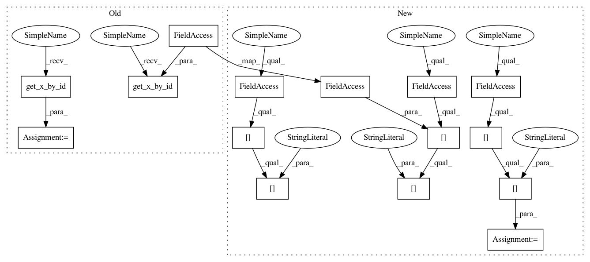

d0d09e71d5cd8d6a3301224049a342aae677930b,cistar-dev/cistar/controllers/car_following_models.py,BCMController,get_action,#BCMController#Any#,115
Before Change
lead_pos = env.get_x_by_id(lead_id)
lead_vel = env.vehicles[lead_id]["speed"]
this_pos = env.get_x_by_id(self.veh_id)
this_vel = env.vehicles[self.veh_id]["speed"]
trail_id = env.get_trailing_car(self.veh_id, this_lane)
trail_pos = env.get_x_by_id(trail_id)
trail_vel = env.vehicles[trail_id]["speed"]
headway = (lead_pos - this_pos) % env.scenario.length // d_l
After Change
if not lead_id: // no car ahead
return self.acc_max
lead_pos = env.vehicles[lead_id]["absolute_position"]
lead_vel = env.vehicles[lead_id]["speed"]
this_pos = env.vehicles[self.veh_id]["absolute_position"]
this_vel = env.vehicles[self.veh_id]["speed"]
trail_id = env.vehicles[self.veh_id]["follower"]
trail_pos = env.vehicles[trail_id]["absolute_position"]
trail_vel = env.vehicles[trail_id]["speed"]
headway = (lead_pos - this_pos) % env.scenario.length
In pattern: SUPERPATTERN
Frequency: 3
Non-data size: 15
Instances
Project Name: flow-project/flow
Commit Name: d0d09e71d5cd8d6a3301224049a342aae677930b
Time: 2017-07-10
Author: akreidieh@gmail.com
File Name: cistar-dev/cistar/controllers/car_following_models.py
Class Name: BCMController
Method Name: get_action
Project Name: flow-project/flow
Commit Name: d0d09e71d5cd8d6a3301224049a342aae677930b
Time: 2017-07-10
Author: akreidieh@gmail.com
File Name: cistar-dev/cistar/controllers/car_following_models.py
Class Name: BCMController
Method Name: get_action
Project Name: flow-project/flow
Commit Name: 157c6d5b638470cbd0d5d0ed0a690db284b6af64
Time: 2017-07-10
Author: akreidieh@gmail.com
File Name: cistar-dev/cistar/controllers/base_controller.py
Class Name: BaseController
Method Name: safe_velocity
Project Name: flow-project/flow
Commit Name: 32b94d43a666a0aacd814273640d22ec17460a5e
Time: 2017-07-10
Author: eugenevinitsky@airbears2-10-142-37-62.airbears2.1918.berkeley.edu
File Name: cistar-dev/cistar/controllers/velocity_controllers.py
Class Name: FollowerStopper
Method Name: get_action